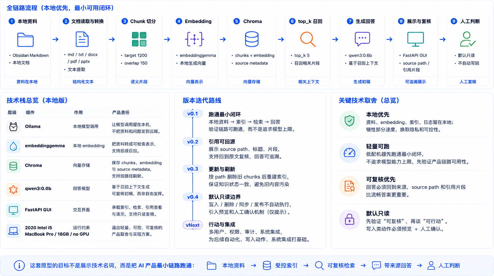

找到了，也不敢用
产品手册、制度、会议纪要和 FAQ 分散在多处，单次搜索很难还原完整依据链。
项目 01｜企业知识工作台
从可信上下文到 Agent 工作流的产品化演进。
模型都这么强了，为什么企业还需要自己的知识系统？
这个项目不是做一个知识库问答机器人，而是设计一套企业知识工作台：把分散在文档、制度、会议、项目资料和历史经验中的知识，整理成可引用、可追溯、可校验、可进入任务流程的可信上下文。
01｜业务问题
企业文档、制度、会议纪要、项目资料和历史经验并不少。真正的断点在于：知识即使被 AI 找到，业务仍然不知道它来自哪里、是不是最新、谁能使用、适不适用于当前判断，因此很难进入方案、复盘或下一步行动。
产品手册、制度、会议纪要和 FAQ 分散在多处，单次搜索很难还原完整依据链。
方案、政策和流程会更新。没有版本与更新时间，内容只能停留在参考。
同一句知识可能只适用于特定客户、产品版本、区域或流程阶段。
没有来源、权限、引用和人审入口，输出难以复核，也难进入工作台任务。
02｜贯穿样例 / 用户任务
先别急着让 AI 回答。一个销售、运营或产品同学准备客户方案、业务判断材料或项目复盘材料时，真正要完成的不是“问 AI 一个问题”，而是基于可信来源整理一份可引用、可复核、可进入下一步行动的上下文。
用户不是在问 AI 一个问题，而是在完成一次需要依据、限制和后续行动的业务判断。
准备客户方案、业务判断材料或项目复盘材料。
召回与当前判断相关的资料，而不是只找相似文本。
把相关知识整理成带来源、引用、版本和适用范围的候选上下文。
由人确认来源是否可靠、版本是否有效、范围是否适用。
确认后的上下文进入方案、复盘或下一步行动材料。
03｜可信上下文层
上下文卡不是一段 AI 摘要，而是一组进入工作流前必须被检查的使用条件。它让用户先看依据、边界和风险，再决定是否把它放进行动简报。
这段知识可能支持当前客户方案中的某项能力说明，但必须先确认来源、版本、适用范围和风险。
来源与引用：来自产品手册 v2.1、历史项目复盘、会议 FAQ，并保留可追溯的原文片段或段落位置。
权限与版本：当前用户是否有权使用？对应的产品、政策或流程版本是否仍然有效？
适用范围与更新时间：适用于什么客户、地区、产品版本或流程阶段？是否可能已经过期？
风险与人审：证据不足、语义相近但场景不同、影响承诺的内容，需要业务负责人确认。
04｜AI / RAG 接入前后
AI 接入后的价值不是给出一个看似完整的聊天回答，而是把分散知识整理成可复核、可确认、可进入工作流的候选上下文。
在产品手册、制度、会议纪要、FAQ 和历史项目中找材料，还要自行判断版本、权限和适用范围。
召回相关知识，聚合相似片段，并附带来源、引用、版本线索和风险提示。
输出不再只是聊天回答，而是进入可复核、可确认的上下文卡。
AI 不直接给最终业务结论，也不替业务负责人确认知识是否适用。
05｜核心产品对象
项目 1 的关键不是多做几个 AI 能力点，而是定义清楚知识进入工作台后由哪些产品对象承接、校验、确认、复用和更新。
承接：知识检索、版本管理、资料来源管理
承接：引用溯源、搜索与引用结果、证据片段
承接：知识任务问答、Agent 执行过程、工具调用、上下文记忆与人工确认
承接：项目复盘、经验沉淀、待确认事项
承接：badcase / eval、评估看板、版本回滚与知识更新
06｜关键界面 / 工作流
界面要让知识被检索、引用、确认，并进入复盘、任务和协作工作区。以下原型展示这套机制如何落到具体页面。
管理文档、制度、会议纪要、FAQ、项目资料和历史案例，重点关注来源、权限、版本和更新时间。
AI 召回相关知识，但必须展示引用片段、来源位置和可能风险。
把已确认的上下文沉淀为复盘材料、待确认事项和可复用经验。
把复杂知识请求拆成可追踪的检索、引用、上下文组织、工具调用和人工确认过程。
以下界面原型展示知识如何被检索、引用、确认，并进入复盘和知识任务工作区。
07｜技术栈全貌与搭建路线
从本地资料进入索引，到检索召回、带来源回答、再到人工复核，这是一条完整的 AI 产品最小链路。它优先验证本地可控、可回源、可复核，而不是追求模型能力上限。

08｜从概念到本地可跑原型
07 不是技术栈说明，而是本地原型的 Architecture Review：先定义 knowledge boundary，再跑通最小闭环，最后把回答交还给人工判断。
先收住 knowledge boundary，再验证 AI 知识链路是否可信。
这个原型要验证的是可信知识链路，而不是模型能力上限。企业知识工作台首先要证明资料能被本地索引、检索、引用和复核，而不是直接追求更强模型。
Alternative A：Use cloud API / cloud embedding，速度更快、模型上限更高。
Alternative B：Local-first MVP，先验证数据边界、日志可控和 citation answer。
Decision：资料、embedding、索引、转换缓存、日志留在本地；Ollama 负责本地模型调用。先把数据边界和调用链路控制住，再验证回答能否回到来源。
原型运行在 2020 Intel i5 MacBook Pro / 16GB / no GPU 上，本地运行、本地索引、本地检索。本地运行链路用于验证 ingestion → embedding → Chroma → retrieval → citation answer 是否能重复跑通。这是产品级可演示 MVP，不是企业生产部署。
牺牲部分速度和模型能力，换取资料不外传、日志可控、badcase 可定位、结果可复核。这是低配 MVP 的取舍，不是排斥未来云端能力。
Not implemented in MVP：云端模型、权限体系、审计日志和系统集成需要等本地 retrieval + citation 跑稳后再评估。
先验证 context layer，再讨论 Agent、Tool 或行动能力。
如果一开始追求完整 Agent / Planning / 多工具协作，会掩盖最基础的问题：资料是否可索引、问题是否可检索、回答是否可回源。Agent 如果没有可信上下文，后续总结、建议和行动都没有稳定依据。
Alternative A：Build a full Agent workflow，一次性放入 Planning、Tool 和自动行动。
Alternative B：先证明 retrieval layer、citation layer 和 human review 能稳定闭环。
Decision：先跑通本地资料 → 文档读取与转换 → chunk → embeddinggemma → Chroma → top_k 5 → qwen3:0.6b → FastAPI GUI，再讨论更复杂的 Agent 能力。
Obsidian Markdown / 本地文档进入索引链路；Chroma 保存 chunks + embedding + source metadata；FastAPI GUI 展示检索结果、引用片段和回答。
降低实现复杂度，先验证 AI 产品链路跑通；暂不追求 Planning、多工具协作、自动行动，避免把不稳定上下文包装成自动化能力。
Not implemented in MVP：Memory、Tool、Workflow 和 Agent action 需要等 retrieval + citation 稳定后再进入下一阶段。
企业知识库的写入动作必须比回答生成更谨慎。
自动写回、删除、同步、发布看起来更像 Agent，但会放大误召回、Router 误判、用户意图不清的风险。
Alternative A：Enable write / delete / sync / publish，让原型更像自动行动系统。
Alternative B：默认只读，所有写入类动作先进入 preview 与 human confirmation。
Decision：默认只读；写入类动作必须 preview + human confirmation。原型先验证“可复核”，再讨论“可行动”。
原型只验证索引、检索、引用回答和复核，不自动执行写入 / 删除 / 同步 / 发布。
牺牲自动化程度，换取知识库不被误写污染。默认只读不是功能没做完，而是先把“可复核”做稳的 Agent 产品边界。
Not implemented in MVP：写回要作为独立 workflow，补齐 diff、confirmation、rollback 后再逐步开放。
诚实边界比包装成“大而全系统”更能建立可信度。
诚实边界增强可信度，避免把 MVP 包装成生产系统；让读者知道哪些能力已经跑通，哪些仍属于后续工程化问题。
09｜从资料到可复核回答
08 关注 retrieval layer 的设计取舍：不是把更多资料塞给模型，而是把资料准入、chunk、召回范围、citation 和 refresh 串成可信上下文基础设施。
问题不是“Agent 能不能读资料”，而是原始资料还没有进入可检查的 context layer；自由读取会造成来源、版本、权限、适用范围不清。
Alternative A：Give Agent direct file access，表面更顺滑。
Alternative B：先建立 retrieval layer + citation layer，再让 Agent 消费可信上下文。
Decision：先建立 retrieval layer + citation layer，再让 Agent 做总结、组织和建议。Agent 的输入不是文件堆，而是带来源、可检查的上下文片段。
回答基于召回片段，而不是直接让模型自由猜；检索链路先把资料变成可复核上下文，再交给回答模型组织。
牺牲直接对话的表面流畅度，换取来源可追踪、回答可复核。这里的重点不是技术名词，而是让上下文先具备进入业务判断的资格。
Not implemented in MVP：Agent action 要等 citation answer 稳定后再接入，避免基于裸知识库做判断。
关键不是能读多少格式，而是哪类资料可以进入索引。知识库质量首先取决于资料范围；错误资料进入索引，会污染后续所有召回和回答。
Alternative A：Full-disk ingestion，让覆盖看起来更完整。
Alternative B：按配置做资料准入，先守住 knowledge boundary。
Decision：支持 md / txt / docx / pdf / pptx，但从配置读取允许索引范围，不做全盘扫描。
先资料准入，再 ingestion；覆盖笔记、制度、方案、幻灯片等常见知识载体，但只处理被配置允许进入索引的资料。
不全盘扫描，避免临时文件、私人文件、过期资料、无关资料进入知识库。这是资料治理和范围控制，不是文件格式展示。
Not implemented in MVP：权限、目录级策略、source_type、project_name 要等资料准入和 ingestion 链路稳定后再扩展。
chunk 同时影响 retrieval confidence、索引成本和答案可复核性；在这个本地原型里，它不是参数展示，而是质量控制。
Alternative A：直接做 semantic chunk / section-aware chunk。
Alternative B：固定 1200 / 150，先得到稳定、可复现的切分结果。
Decision：当前 MVP 暂未做 semantic chunk / section-aware chunk，先采用 chunk_target_chars 1200 / chunk_overlap_chars 150。
这个取值用于尽量保留制度条款、审批条件、项目说明的完整语义，让召回片段仍然能被用户复核。
chunk 太小会切断定义、条件、例外条款；chunk 太大会引入噪音，降低召回可控性。overlap 150 用来保留跨段上下文，这是语义完整、低配本地索引成本和召回质量之间的折中。
Not implemented in MVP：标题层级、章节结构、语义边界切分需要更多文档结构样例验证。
召回数量不是越多越好；在这个原型里，上下文噪音会影响回答可信度，也会让引用来源变得混乱。
Alternative A：提高 top_k 或加入 rerank / hybrid search / MMR。
Alternative B：先固定 top_k 5，控制噪音并验证 citation answer。
Decision：当前 MVP 暂未引入 rerank / hybrid search / MMR，先将 top_k 设为 5，验证 retrieval + citation 最小闭环。
让模型拿到有限、可复核的候选片段，而不是一次塞入过多资料；回答必须能被用户回到原文质疑。
top_k 太少可能漏依据，太多会制造噪音上下文，生成看似完整但来源混乱的答案。这不是最优检索方案，而是当前阶段控制复杂度和噪音的选择。
Not implemented in MVP：rerank、metadata filter、hybrid search 需要先有稳定 badcase 集和 route confidence 评估。
可信回答需要同时解决两个问题：回答可追溯，知识状态不过期；否则答案即使流畅，也不能进入业务判断。
Alternative A：只展示回答，或只追加新 chunks。
Alternative B：citation 回源 + path refresh，分别控制追溯风险和过期风险。
Decision：回答侧用 citation 展示 source path、标题、片段和原文来源；索引侧在文档更新时，按 path 删除旧 chunks 后重建索引。
citation 解决“回答可追溯”；path refresh 通过“按 path 删除旧 chunks 后重建索引”解决“知识状态不过期”。
refresh 牺牲一点索引速度，换取知识状态一致性。citation 和 refresh 分别控制追溯风险与过期风险，避免“答案看似正确，但来源不可查或知识已过期”。
Not implemented in MVP：版本记录、变更 diff、rollback、audit trail 需要等 refresh 机制稳定后再产品化。
10｜从可信上下文到 Agent 判断
企业知识工作流里，Agent 不是默认答案。Design Review 的关键不是“有没有 Agent”，而是判断：什么时候走 retrieval，什么时候做 summary，什么时候进入 workflow orchestration，什么时候必须停在 human confirmation 前。
Agent 的能力边界，先由 context quality 决定。
Agent 如果直接读取全部知识库，容易造成来源不清、版本不清、权限不清、适用范围不清。回答虽然自然，但业务无法复核。
Alternative A：Give Agent direct access to the knowledge base，由模型自行决定依据。
Alternative B：Agent 只消费 retrieval + citation layer 输出的可信上下文。
Agent 不直接消费知识库，而是消费 Retrieval + Citation Layer 输出的可信上下文：召回片段、source path、标题、引用来源和可复核证据。
Verified Pipeline：Obsidian Markdown / 本地文档 → ingestion → embeddinggemma → Chroma → top_k retrieval → citation answer → human review。
06 / 07 / 08 已验证这条本地链路可以跑通。Agent 输入的是经过检索后的 Context，而不是全部知识。
牺牲部分回答流畅度，换取来源可追踪、回答可复核、badcase 可定位。产品判断不是让 Agent 读得更多，而是让它只能读经过治理的上下文。
Not implemented in MVP：Agent summary、复盘、建议和任务生成要等 retrieval + citation 可靠性稳定后再接入。
Route by confidence，而不是默认进入 Agent。
企业里的问题并不都属于 Agent。查资料、查制度、找依据、项目复盘、生成行动建议、更新知识库、审批发布，实际上属于不同任务路径。
Alternative A：Route everything to Agent，让模型决定下一步。
Alternative B：Route by confidence，再进入 Retrieval / Citation Answer / Agent Summary / Workflow / Human Confirmation。
Decision：先做 route by confidence，而不是所有请求都进入 Agent：资料查询 → Retrieval；依据确认 → Citation Answer；内容组织 → Agent Summary；项目复盘 → Review Workflow；写入更新 → Preview + Human Confirmation；高风险行动 → Workflow + Audit。
旧版 Agentic RAG 方案中已有 Router、search_docs Tool、Memory、Agent Core 等设计方向；当前 MVP 已验证 Retrieval + Citation，尚未把 Router / Workflow / Agent Action 写成完整实现。
Router 判断错误会影响整个后续流程。因此低置信度优先澄清或回退 Retrieval，而不是强行进入 Agent。
Not implemented in MVP：route confidence、fallback、人工确认和 route-level evaluation 需要可验证样例集与失败回退机制。
真正高风险的不是回答，而是把回答变成动作。
写回、删除、同步、发布、更新制度、审批都会影响后续业务流程。企业 AI 产品必须把回答和行动分开治理。
Alternative A：Execute action after answer，让体验更像自动化助手。
Alternative B：默认只读，写入类动作必须 preview → diff → confirmation → execute。
Decision：先证明回答可复核，再讨论自动行动。当前默认只读；所有写入类动作必须经过 preview → diff → confirmation → execute。
当前 MVP 不自动写回、不删除、不同步、不发布。回答只是可复核初稿，用户必须能够回到来源判断。
牺牲自动化体验，避免在来源不足、召回错误、用户意图不清时污染知识库。默认只读是产品风险控制，不是功能缺口包装。
Not implemented in MVP：Action 要独立进入 workflow orchestration，并先建立 preview / diff / rollback / audit trail。
长期记忆只有在写入条件可控时，才会成为资产。
很多 Agent 优先加入长期 Memory。但企业知识场景里，低质量 Memory 会放大旧规则、过期知识、未确认判断和临时表达带来的错误。
Alternative A：Auto-save long-term Memory，让系统显得更连续、更个性化。
Alternative B：先验证 retrieval / citation / refresh / read-only boundary，再设计 Memory 写入条件。
Decision：Memory 不是第一阶段能力。先建立可信上下文、引用可追溯、写回可确认，再讨论哪些信息值得进入长期 Memory。
当前 MVP 重点验证 Retrieval、Citation、Refresh、Read-only Boundary。Memory、Tool、Workflow、Agent Action 属于下一阶段能力，不写成已实现。
暂时牺牲连续个性化体验，避免低质量信息进入长期 Memory，成为后续回答和行动的隐性污染源。
Not implemented in MVP：Memory 需要先有写入条件、冲突检测、人工确认、更新、删除和版本管理，而不是 append-only。
11｜产品架构判断
企业知识不能直接作为 Agent 的自由输入。Agent 要使用知识，必须经过可信上下文、任务编排、人审确认和反馈回流。
围绕真实知识任务，架构将用户输入、Agent 编排、可信上下文、工具调用、人审确认与经验沉淀组织在同一条工作流里。
12｜产品演进路径
V1 / V2 / V3 的演进不是功能越堆越多，而是产品可信度和工作流承接能力逐步增强：先能找，再能可信使用，最后进入可维护的知识任务。
这条演进路径不是从 RAG 直接跳到 Agent，而是先解决“找得到”，再解决“敢使用”，最后让可信上下文进入可维护的知识任务、复盘和持续更新。
13｜验证与 badcase
这个原型不是只验证“能不能生成答案”，而是验证资料能否被找到、来源能否被追溯、回答是否基于证据、Agent 是否判断对路径，以及高风险动作是否被挡在人工确认之前。
覆盖 Obsidian 笔记和本地文档，验证资料能进入索引范围。
用于验证 chunk 切分、元数据和 Chroma 写入是否可用。
覆盖协作规则、GUI 使用、索引维护、项目介绍和跨项目召回。
9 条命中，1 条基本命中；重点看正确来源是否进入 Top-K。
不是给流畅度打分，而是看回答是否能支撑下一步复核和判断。
| 产品边界案例 | 观察现象 | 产品判断 | 控制策略 |
|---|---|---|---|
| 误召回 | 项目介绍类问题可能召回其他 RAG 项目资料。 | 语义相似不等于业务相关，企业知识检索必须看项目、来源和路径约束。 | 增加 project_name、source_type、path 等元数据约束，并支持来源筛选。 |
| 长文档总结片面 | 总结产品设计文档时，只覆盖某个章节。 | 基础 RAG 更适合局部问答；长文档总结需要结构化摘要和目录策略。 | 总结类问题优先召回目录、章节摘要和关键段落，而不是只拿相似片段。 |
| Router 误判 | “我这个项目怎么讲”被误判为 direct，没有检索本地资料。 | Agent 的第一步不是执行，而是正确判断任务路径；Router 错了，后面的 Tool 和回答都会错。 | 给 Router 增加本地资料信号规则，低置信时先澄清或先做检索。 |
| 写回风险 | 用户要求写回 Obsidian 或更新资料时，存在误写和覆盖风险。 | Agent 能力边界必须先于能力扩展，写入类动作不能跟检索回答混在同一权限里。 | 默认只读；写入、删除、同步、发布类动作必须先预览并人工确认。 |
| 来源不足不强答 | 召回证据不足时，模型仍可能生成看似完整的回答。 | 企业知识场景里，错误但流畅的答案比“不知道”更危险。 | 当引用不足以支撑结论时，提示资料不足、缩小范围或转人工判断。 |
验证检索是否能命中 top_k 5，是否能回到原文路径和片段。
验证回答是否受到引用约束，citation 不足时是否提示证据不足。
验证写入、删除、同步、发布类动作是否必须进入人工确认。
14｜项目总结
这个项目的核心不在于让 AI 多回答几个问题，而是在定义：哪些知识可以进入上下文，哪些上下文可以被引用，哪些内容必须经过人工确认后才能进入任务、复盘和持续更新。
从知识来源到可信上下文，再到工作流承接和复核更新，形成一条可引用、可追溯、可校验、可确认的产品机制。
文档、制度、会议纪要、FAQ、项目资料和历史经验，先带上来源、权限、版本和更新时间。
AI 召回和整理的内容不直接成为答案，而是进入上下文卡，保留引用片段、适用范围、风险提示和人审入口。
经过确认的上下文进入行动简报、项目复盘、知识任务和复核记录，成为可继续推进的工作材料。
错误、遗漏和不适用内容进入评估、复盘、版本回滚和知识更新，反向修正下一轮上下文规则。
这是产品级原型与机制设计，不是企业生产系统交付。
它服务的不是“问 AI”，而是让项目负责人、管理者、PMO、知识管理角色在有依据的上下文中完成判断、复盘和下一步行动。
可维护机制：任务和记忆有边界，版本和判断有记录，错误和回归有闭环，人工确认有检查点。
项目 1 解决“知识如何可信使用”：把历史资料、经验和判断转化为可检索、可引用、可复盘的上下文。
项目 2 解决“信号如何进入责任链”：把新产生的反馈、会议结论和需求线索转化为可确认、可拆解、可执行的任务。
一个解决“知识如何可被引用”，一个解决“信号如何进入责任链”。